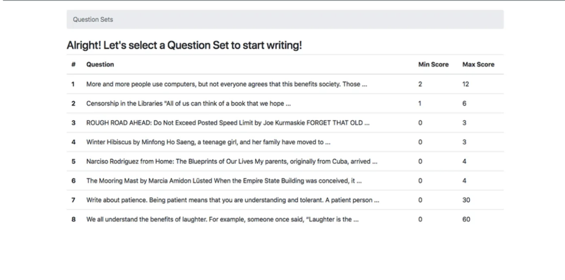

Automated Essay Grading

We tackled the challenge of automatically grading essays, using cutting-edge algorithms to enhance educational assessment. Employing sophisticated machine learning and natural language processing techniques like linear regression, support vector regression, and recurrent neural networks, the aim is to predict essay scores with precision and efficiency.
Technology Stack Used:
- Python
- Libraries : Scikit-learn, TensorFlow, PyTorch, Pandas, NumPy
Part 1: Data Exploration and Preprocessing:
- Preprocessing steps such as tokenization, normalization, and removal of stopwords and punctuation marks are performed on the raw text data.
- Exploratory data analysis techniques are employed to gain insights into the underlying patterns and structure of the dataset, laying the foundation for subsequent model development.
Part 2: Feature Engineering and Model Development:
- Predictive models are developed using a variety of machine learning algorithms, including linear regression, support vector regression, and deep learning architectures like recurrent neural networks.
- Standard regression metrics such as Mean Absolute Error and Pearson correlation coefficient are utilized to evaluate the performance of the developed models and ensure alignment with human-annotated scores.